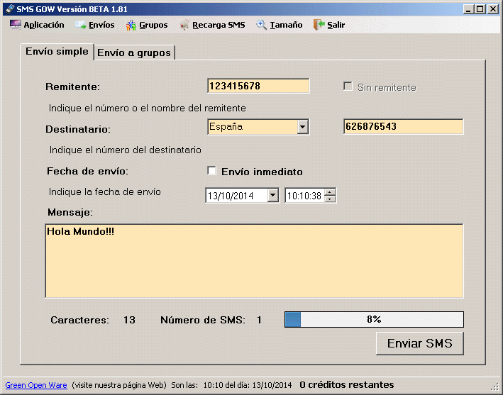
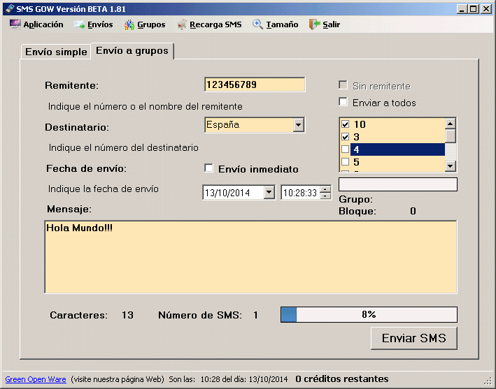
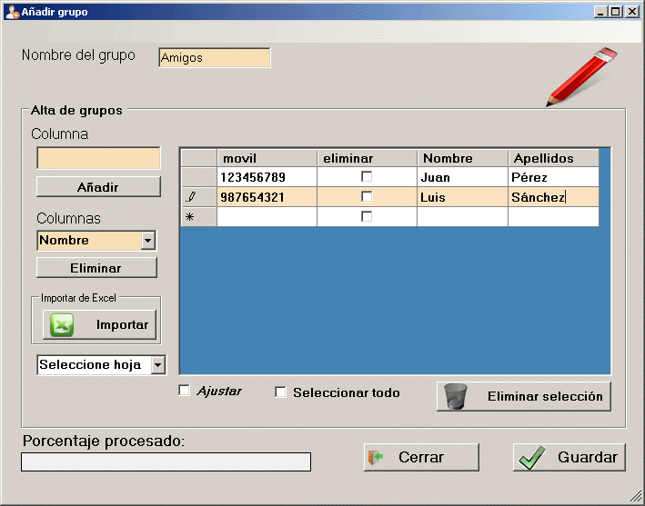
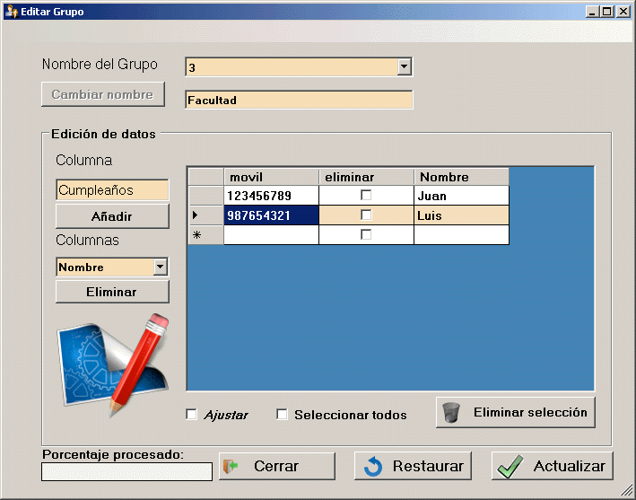
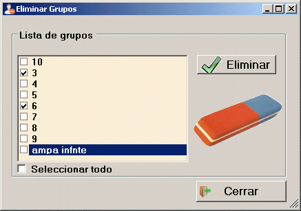
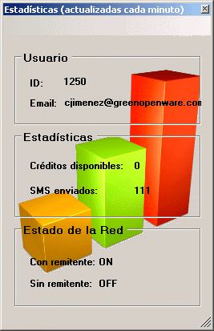
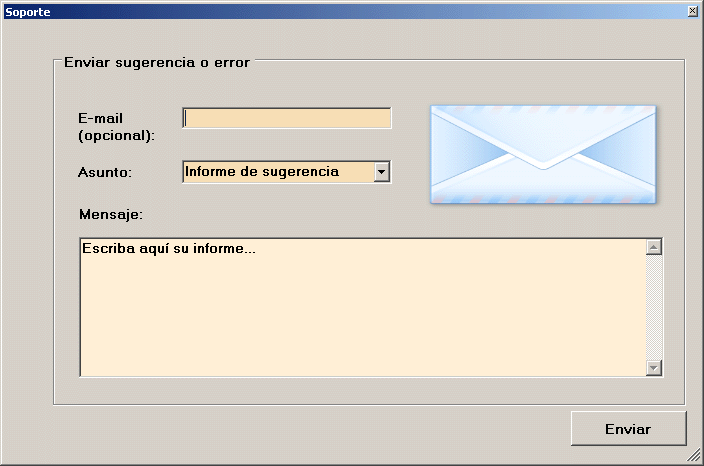

Cliente SMS GOW
El cliente SMS-GOW es una aplicación desarrollada en la empresa Green Open Ware en el año 2011 y exclusivamente diseñada para Windows mediante Visual C# y .NET. Actualmente el proyecto se encuentra abandonado debido a la falta de soporte. La última versión datada es la 1.81 beta.
Descarga la aplicación(v1.81B - 2.93 MB/exe)
Imágenes del producto:







Diseño imagen/Diseño software/Desarrollo: Carlos Jiménez de Parga.
© Green Open Ware